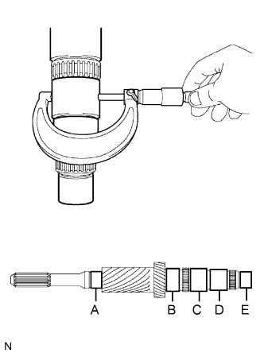

ПЕРВИЧНЫЙ ВАЛ > ПРОВЕРКА |
| 1. INSPECT INPUT SHAFT |
Using a dial indicator and 2 V-blocks, measure the shaft runout.
|  |
Using a micrometer, measure the journal diameter of each input shaft journal at the specified positions.
| Item | Specified Condition |
| Journal A | 34.002 to 34.015 mm (1.3387 to 1.3392 in.) |
| Journal B | 44.989 to 45.000 mm (1.7713 to 1.7716 in.) |
| Journal C | 44.985 to 45.000 mm (1.7711 to 1.7716 in.) |
| Journal D | 41.985 to 42.000 mm (1.6530 to 1.6535 in.) |
| Journal E | 32.967 to 32.974 mm (1.2979 to 1.2982 in.) |
| Item | Specified Condition |
| Journal A | 34.002 mm (1.3387 in.) |
| Journal B | 44.989 mm (1.7713 in.) |
| Journal C | 44.985 mm (1.7711 in.) |
| Journal D | 41.985 mm (1.6530 in.) |
| Journal E | 32.967 mm (1.2979 in.) |
| 2. INSPECT 6TH GEAR SUB-ASSEMBLY |
Using a cylinder gauge, measure the inside diameter of the 6th gear.
| 3. INSPECT 3RD GEAR |
Using a cylinder gauge, measure the inside diameter of the 3rd gear.
| 4. INSPECT 4TH GEAR |
Using a cylinder gauge, measure the inside diameter of the 4th gear.
| 5. INSPECT NO. 2 TRANSMISSION HUB SLEEVE |
 |
Check the sliding condition between the No. 2 transmission hub and No. 2 transmission hub sleeve.
Check that the splines of the No. 2 transmission hub sleeve are not worn.
Using a vernier caliper, measure the width of the No. 2 transmission hub sleeve groove (A) and the thickness of the claw part of the No. 2 or No. 3 gear shift forks (B), and calculate the clearance.
| 6. INSPECT NO. 3 SYNCHRONIZER RING (for 6th Gear) |
Using a feeler gauge, measure the clearance between the synchronizer ring and 6th gear.
Coat the 6th gear cone with gear oil.
Check the braking effect of the synchronizer ring.
Turn the synchronizer ring in both directions while pushing it against the 6th gear cone. Check that the ring locks in both directions.
| 7. INSPECT NO. 2 SYNCHRONIZER RING SET (for 3rd Gear) |
Using a feeler gauge, measure the clearance between the synchronizer ring and 3rd gear.
Coat the 3rd gear cone with gear oil.
Check the braking effect of the synchronizer ring.
Turn the synchronizer ring in both directions while pushing it against the 3rd gear cone. Check that the ring locks in both directions.
| 8. INSPECT NO. 3 SYNCHRONIZER RING (for 4th Gear) |
Using a feeler gauge, measure the clearance between the synchronizer ring and 4th gear.
Coat the 4th gear cone with gear oil.
Check the braking effect of the synchronizer ring.
Turn the synchronizer ring in both directions while pushing it against the 4th gear cone. Check that the ring locks in both directions.
| 9. INSPECT 3RD GEAR THRUST WASHER |
Using a micrometer, measure the thrust washer thickness.